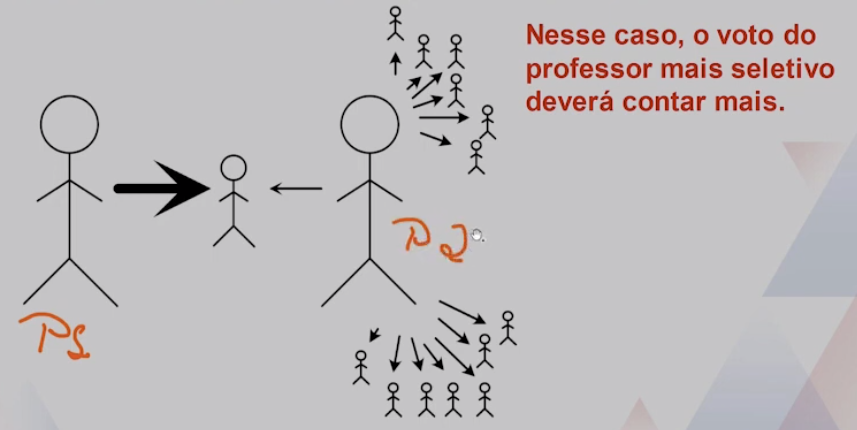
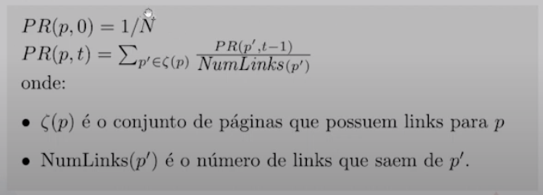
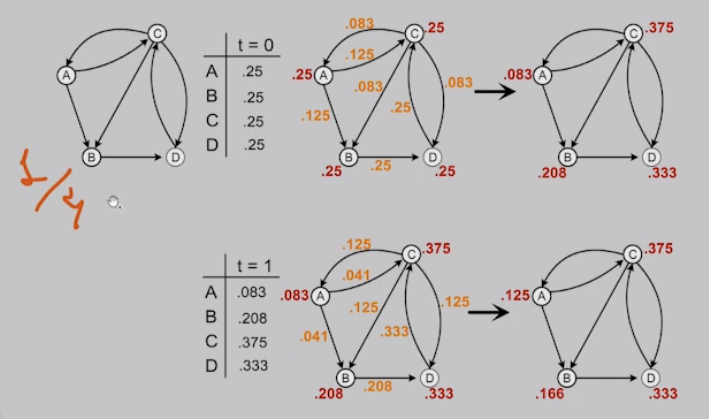
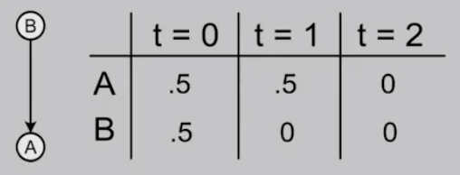
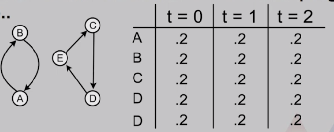
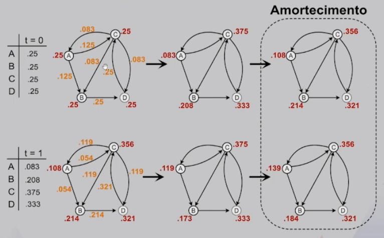

Disciplinas
-
ESTRUTURA DE DADOS-T01-2024-1 Concluído
Materiais
Vídeo 2 - Estruturas de Dados - Grafos (PageRank). sendProf° ministrante: Dr. Jonathan de Andrade Silva.
Conteúdo
Grafos (PageRank).
- Roteiro:
- Introdução
- Modelo Simplificado
- PageRank
Introdução.
- Iniciaremos o estudo de uma aplicação prática de grafos, o PageRank.
- O PageRank é uma métrica criada pelos fundadores do Google e nomeada em referência a Larry Page. A métrica é usada para avaliar a relevância de páginas Web.
- A métrica estima uma "popularidade" com a quantidade e qualidade dos links para uma página.
- Cada link que uma página p recebe de outras páginas é um voto de suporte, sendo esse voto utilizado para computar o PageRank.
- Receber links aumenta a autoridade de p. Em outras palavras, existem muitas outras páginas recomendando p para seus usuários.
- Receber links de páginas com PageRank alto é melhor do que links de páginas com PageRank baixo.
- O voto de suporte de links vindos de páginas com PageRank alto é mais valioso, dado que elas possuem mais autoridade. É o que entendemos por links de qualidade.
- Páginas que possuem muitos links para outras páginas fornecem um peso menor do que páginas com poucos links.
- Uma página que recomenda demais deve ser levada menos em conta do que páginas que recomendam menos.
- O peso do seu voto de suporte é distribuído entre as páginas que ela recomenda.
Para entender essas regras, vamos supor que queremos saber quais alunos entendem de Estruturas de Dados.
Entretanto, os colegas de classe não são autoridades em Estruturas de Dados, dado que estão aprendendo sobre o assunto.
Supondo que temos dois professores, um deles deu voto de suporte para um aluno e o outro distribuiu seu voto para vários alunos.
Modelo Simplificado.
Vamos assumir que temos um conjunto de N páginas web que se ligam por meio de links. Computaremos um modelo simplificado do PageRank de cada página de maneira iterativa.
Calculando em um cenário simples.
- Considerações sobre o Modelo
- Links de uma página para si mesma serão ignorados. Isso faz com que o grafo que representará as páginas web não tenha self- loops.
- Múltiplos links de uma página para outra serão tratados como apenas um link.
- Os PageRanks transferidos de uma página para outra, em cada iteração, são igualmente distribuídos entre todos os links de saída.
- Assumiremos que não existem páginas sem links, pois isso impediria que o PageRank da página fosse distribuído.
- Interpretação dos valores
- Os PageRanks são uma distribuição de probabilidade. Note que em todas as iterações a soma dos valores resulta em 1 (um).
- Uma interpretação dos valores seria que queremos entender onde chegaria alguém que navega na internet, clicando em links ao acaso.
Problemas com o modelo simplificado.
- Páginas sem links de saída tendem a drenar os PageRanks da rede. 
- Páginas que formam um ciclo, sem conexão com as outras páginas, tendem a bloquear PageRanks dentro do ciclo e ficar em looping infinito.. 
PageRank.
Uma nova variável chamada de fator de amortecimento (damping factor) foi inserida no modelo para superar os problemas:

- Fator de Amortecimento
- O fator de amortecimento representa a ideia de que um usuário que navega ao acaso eventualmente parará de clicar em links para ir para outro lugar.
- O fator de amortecimento seria a probabilidade de continuar seguindo os links, recebendo um valor entre 0 (zero) e 1 (um).
- Em geral, o fator de amortecimento é configurado como 0.85. Nesse caso, todas as páginas recebem a mesma chance de serem visitadas ao acaso.
Calculando em um cenário simples.
